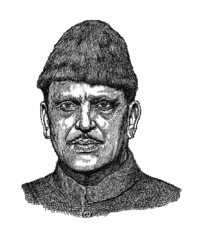

Vishwanath Pratap Singh shortened to
V. P. Singh, generally known as 'Mister Clean' was an Indian Politician who was the 7th Prime Minister of India from 1989 to 1990 and the 41st Raja Bahadur of Manda.
He was educated at the Allahabad University and Fergusson College in Pune. In 1969, he joined the Indian National Congress party and was elected as a member of the Member of Legislative Assembly from Uttar Pradesh. In 1971, he became a Member of Parliament. He served as the Minister of Commerce from 1976 to 1977.
In 1980, he became the Chief Minister of Uttar Pradesh and was known for the encounter of the gang of Phoolan Devi.
In the Rajeev Gandhi's ministry, V.P. Singh was given various Cabinet posts, including Minister of Finance and Minister of Defence. Singh was also the Leader of the Rajya Sabha from 1984 to 1987. During his tenure as Minister of Defence, the Bofors Scandal came to light, and he resigned from the ministry.
In 1988, he formed the Janata Dal Party by merging various factions of the Janata Party. In the 1989 elections, with the support of the Bharatiya Janata Party, formed the government and he became the Prime Minister of India. During his tenure as Prime minister, he implemented the Mandal Commission Report for OBCs, which led to major protests against the act. He also created the Sixty-second Amendment and enacted the Scheduled Castes and Scheduled Tribes Act in 1989. Singh resigned on 7 November 1990.
His Prime ministerial tenure lasted for 343 days
read more.
